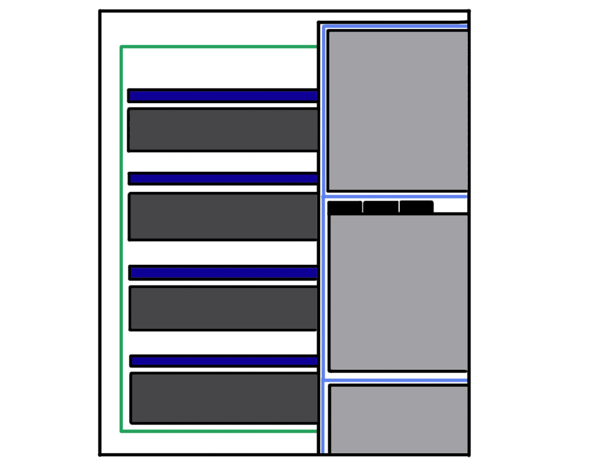

In-Browser Coding Tools
by Evelyn VanAlstine

What are they?
Also known as Web Development tools, In-browser coding tools allow the developer to test and debug code while allowing you to manipulate assets of the web page. Web development tools allow developers to access information like images, scripts, fonts, and other external files. Some tools even allow you to build the structure of your own website.
What tools can you use?
Some of the most common web development tools are Sublime text, Chrome Developer Tools, GitHub, jQuery, and Sass. Most of these tools allow you to see what the browser is doing at that given moment and allow you to go back and fix any error made previously. Some tools allow creating animations, adding plug-ins, or even just navigating documents. These tools are easy to navigate through keyboard shortcuts that allow you to work efficiently and quickly.
Add-ons and built in features
Most web development tools come as add-ons or built in features in most web browsers. Some of the most popular browsers include Google Chrome, Internet Explorer, Safari, Firefox, and Opera. Some of the most common features are editing information like fonts, colors, images, size, and themes.
The difference between HTML and documents
HTML and DOM, the Document Object Model, are common built-in web development tools. HTML is the display, or the finished product while DOM is the structure underneath. HTML elements have labels, such as, "heading" and "paragraph" and DOM represents the document that can be manipulated. An example of DOM is Javascript, which uses DOM to access a documents and it's elements.
resources
Sources and links: